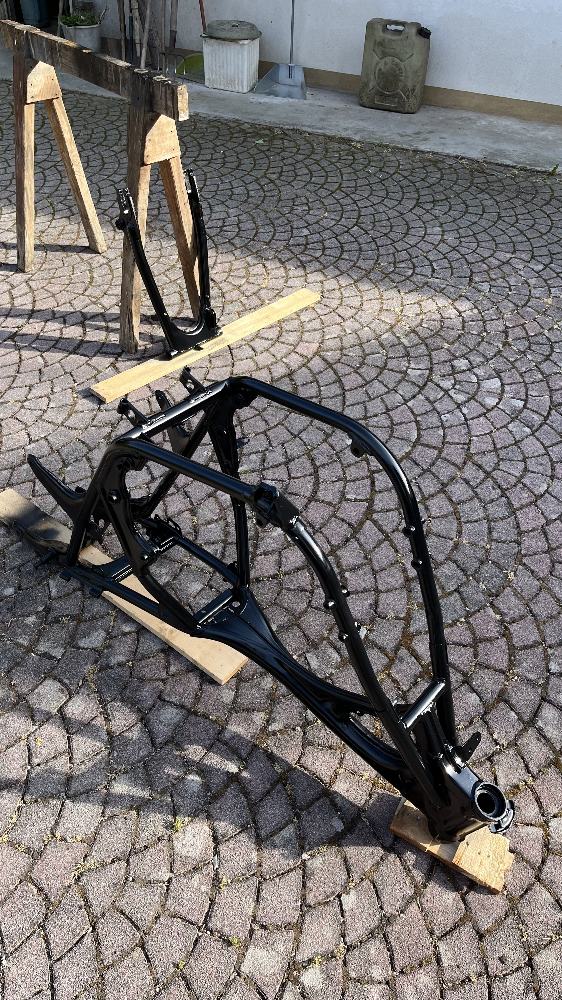

Cosa Facciamo

Foto di Zach / CC BY-NC-ND 2.0
Meccanica di Precisione
Smontaggio completo, sabbiatura e lucidatura dei carter. Sostituiamo cuscinetti e paraoli per garantire una perfetta tenuta e affidabilità del motore.

Foto d'archivio personale / Riproduzione riservata
Verniciatura Telai
Sverniciatura e sabbiatura strutturale. Applichiamo trattamenti anticorrosivi e verniciatura a polvere nero lucido per ripristinare il telaio alle condizioni originali di fabbrica.